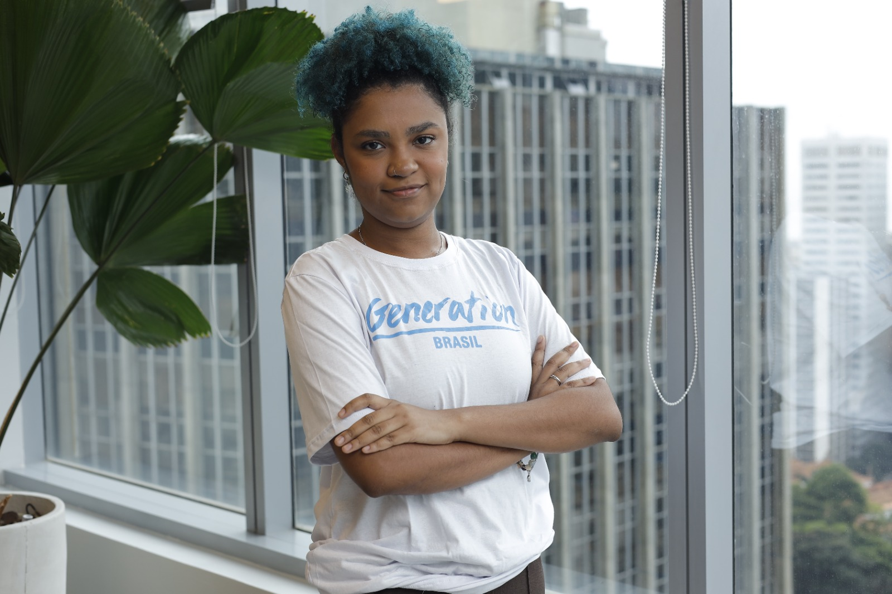
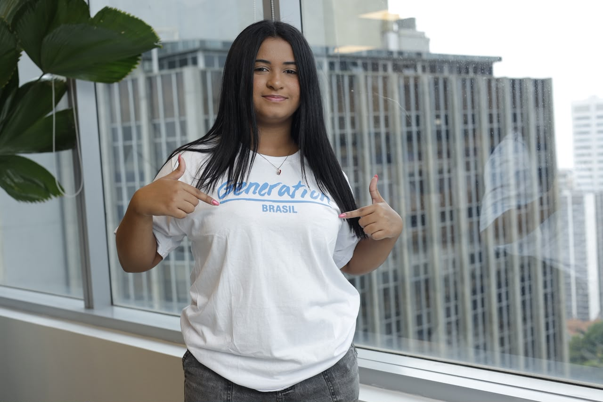
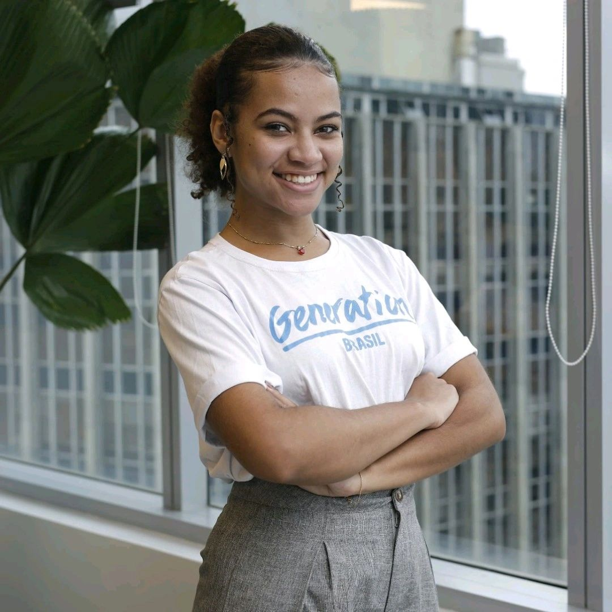
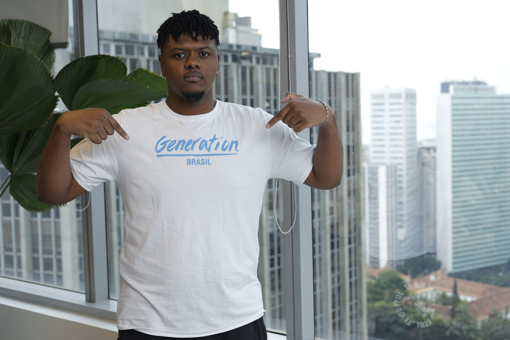
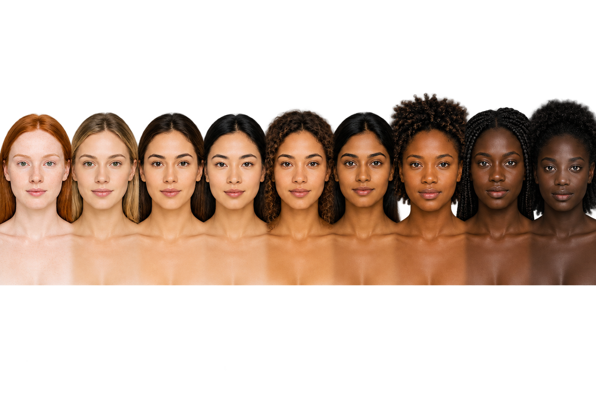
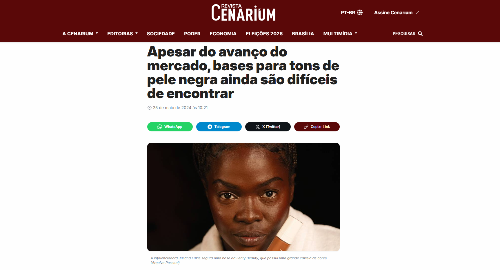
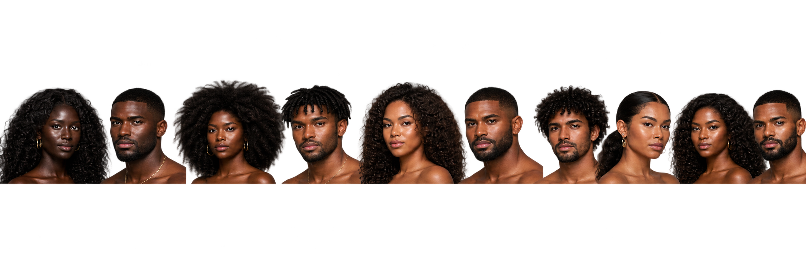
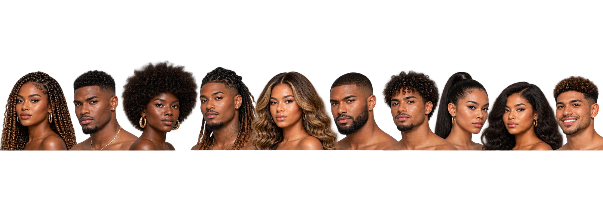
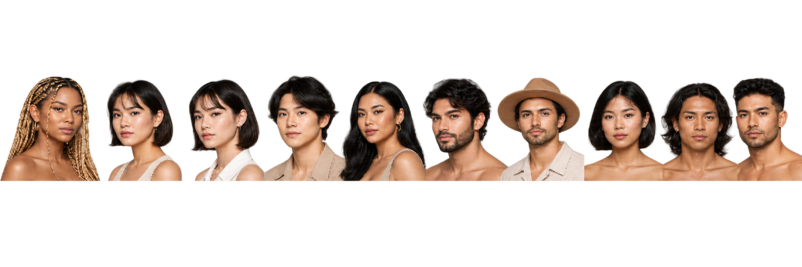

Ana Beatriz
Arquitetura de dados e VisualizaçãoResponsável por toda a criação, estruturação e arquitetura do banco de dados do projeto, além da construção dos dashboards e transformação dos dados em leitura estratégica.
LinkedInA nova geração da beleza começa em você.
clique ou toque para revelar
Uma experiência visual sobre tons, representatividade e as lacunas do mercado brasileiro de beleza.
explorar análiseUnimos dados, design, tecnologia e propósito para investigar representatividade no mercado da beleza brasileira e transformar análise em impacto.

Responsável por toda a criação, estruturação e arquitetura do banco de dados do projeto, além da construção dos dashboards e transformação dos dados em leitura estratégica.
LinkedInResponsável pela organização geral do projeto, estruturação e pipeline de dados. Atuou na extração via API (IBGE), tratamento e padronização com Python (Pandas), preparação para integração com SQL e análises analíticas.
LinkedInResponsável pela construção visual do projeto, identidade da AURENA e desenvolvimento da experiência do site.
LinkedIn
Atuou na construção visual do projeto, colaborando com a apresentação estética, coerência da marca e apoio criativo.
LinkedIn
Atuou na exploração dos dados, limpeza das bases e apoio analítico para gerar os insights centrais do projeto.
LinkedIn
Contribuiu com a modelagem analítica e apoio na construção dos indicadores e recursos de visualização no Power BI.
LinkedInMais da metade da população brasileira se declara preta ou parda. Mesmo assim, a representatividade da beleza ainda não acompanha a diversidade real do país.

O mercado diz que avançou. Mas a experiência conta outra história.

Revista Cenarium
Então fica uma pergunta:
Se uma consumidora precisa misturar produtos para encontrar a própria cor, podemos realmente chamar isso de escolha?
Foi aí que decidimos medir essa ausência.
Da população brasileira à oferta do mercado: uma leitura sobre tons, inclusão e representatividade.
A AURENA decidiu transformá-la em possibilidade.



São 30 possibilidades de alguém se reconhecer.
Talvez a resposta não esteja em um número.
BELEZA SEM LACUNAS